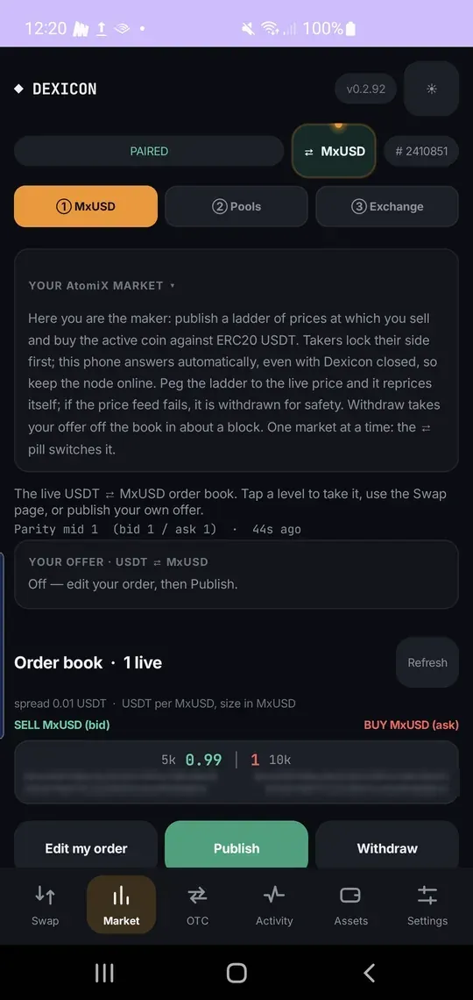
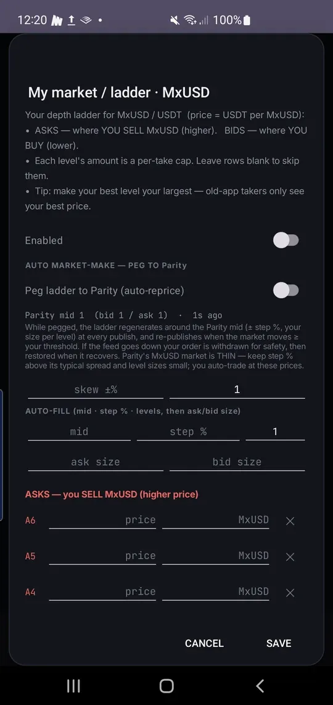

Make a USDT ⇄ MxUSD market
See every maker’s USDT ⇄ MxUSD prices, and publish your own: a ladder of levels at which your phone sells and buys MxUSD, answered automatically even with Dexicon closed.
Read the live book
① MxUSD › Market shows the order book: each maker’s best bid and ask in USDT per MxUSD, the size on offer, and the maker’s key. Tap a level to take it, or use Swap.
Your own offer’s state sits above the book: Off until you publish.

Set your ladder
Tap Edit my order. Asks are where you sell MxUSD, bids where you buy it; each level’s amount is the most one taker can take. Peg it to parity and it re-prices itself around 1 USDT.
Make your best level your largest: older apps only see your best price.

Publish, and leave it running
Tap Publish. Takers lock their side first and your phone answers with the matching lock, so keep the node online. If the price feed fails, the ladder is withdrawn for safety. Withdraw takes your offer off the book in about a block.